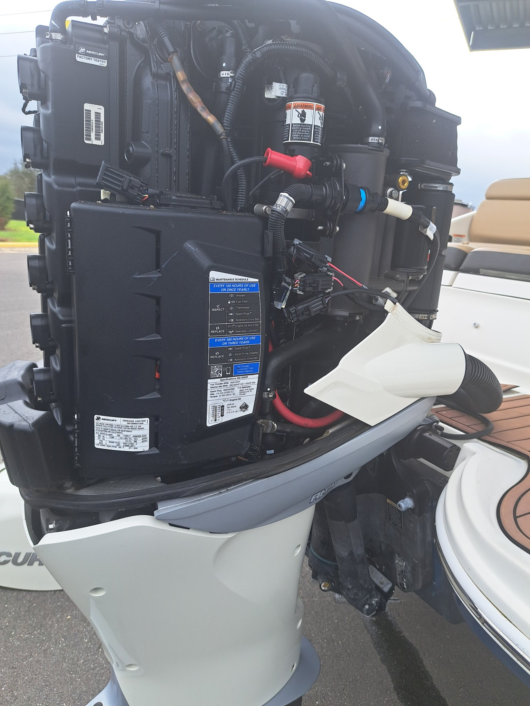

Full Mercury outboard service: computer diagnostics, fuel system repair, water pump impellers, thermostats, gearcase reseals, and powerhead work. From older two-strokes to the latest four-strokes.
Yamaha outboard maintenance and repair — 100-hour services, trim and tilt systems, fuel delivery problems, ignition troubleshooting, and corrosion-related repairs that Florida boats are famous for.
Suzuki outboard service and repair with proper diagnostic procedures. Maintenance, fuel systems, cooling, and electrical — done right at your dock or lift.
Evinrude outboard repair, Tohatsu service, and Johnson outboards including the older OMC-era two-strokes: carburetor service, ignition systems, water pumps, and fuel system rebuilds. Plenty of shops won't touch the old ones — we will.
$150 an hour, parts at cost. $199 flat covers the trip and a full diagnosis within 30 miles.